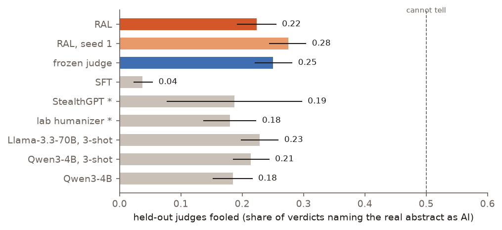
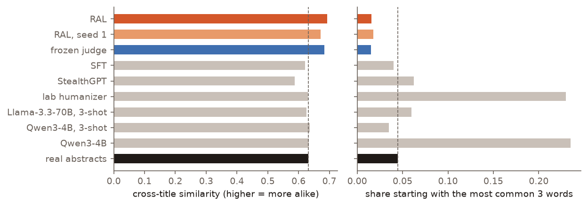

← Research·Experiments·
At 4B, RAL’s gain on held-out judges came from writing longer, after its own judge starved it for 150 steps
For people training writers against learned judges, and for anyone scoring them with LLM judges. We rebuilt Edison Scientific’s Reinforced Adversarial Learning with a 4B writer and an 8B judge on recent NIH grant abstracts. Both runs first learned a bold markdown header their starting judge liked; the co-trained judge caught it, and the writer’s reward then sat near zero for most of training. On two held-out judges RAL gained 4 to 9 points over the untrained model, but those judges favour longer abstracts, and at equal length no method beat the untrained model.
results/runs/ and results/summary.json. Left: each RL run’s training reward over 200 steps, as scored by its own judge (10-step average); the frozen-judge run (blue) climbs and stays; both RAL seeds (orange) collapse near zero by step 40, and only seed 0 comes back, at step 190. Right: how often the two held-out judges named the real abstract as the AI one, per source, on 200 held-out titles; 0.5 would mean they cannot tell. Seed 1, the longest writer, scores highest.Summary: the short answer and the key results
In short
Can a small open model learn to write NIH grant abstracts from real examples alone, with Reinforced Adversarial Learning? Not measurably. A Qwen3-4B writer trained for 200 steps against a co-trained Qwen3-8B judge fooled two held-out open judges 22% of the time (28% for a second seed), against 19% for the untrained model. But those judges reward length: pooled over every model, abstracts near the real length fooled them 18% of the time and abstracts over twice as long 39%, and with length held fixed no method beat the untrained model (RAL −6 points [−13, +2]). Both RAL runs first learned a bold markdown header the starting judge liked; the judge caught it so early that the reward sat near zero for 156 and 161 of 200 steps. A frozen-judge control kept the header and reached 25%. Fine-tuning on the references was caught 96% of the time. StealthGPT moved a commercial detector from 0 to 11 of 16 “human” while dropping 17% of technical terms.
Key results
| What we tested | Result | Compared with |
|---|---|---|
| Does RAL beat the untrained model on held-out judges? | On the raw rate, a little: fooled 0.224 against 0.185, paired +0.039 [+0.009, +0.070] (seed 0; seed 1: 0.275, +0.090); the plan asked for +0.05 | Qwen3-4B untrained; mean of gpt-oss-120b and GLM-4.5-Air, 200 titles |
| Is it length? | Yes: the held-out judges are fooled 0.18 by abstracts near the real length and 0.39 by abstracts over twice as long (pooled, 1,357 pairs); at equal length RAL is −0.059 [−0.132, +0.019] against the untrained model, seed 1 −0.008, the frozen control −0.031, 3-shot Llama −0.026 | A fit of fooling on source and log length ratio, bootstrap over titles (post hoc) |
| Does it beat cheaper methods? | No: 3-shot Qwen3-4B 0.214, 3-shot Llama-3.3-70B 0.229 (RAL − Llama −0.005 [−0.035, +0.026]) | Prompting with three real abstracts |
| Does it beat a frozen judge? | No: the frozen-judge control reached 0.250; RAL − frozen −0.026 [−0.055, +0.004]. The control was gamed on format (reward 0.88, header on 100% of answers) | The same loop with the judge never updated |
| Why RAL stalled: the starved writer | Seed 0: judge accuracy 1.00 from step 29, reward under 0.04 from step 35 to 190 (median 5 × 10−7), the gate skipped 165 of 200 updates, one escape at step 190 by deleting markdown bold. Seed 1: reward under 2 × 10−4 from step 40 to 200, never escaped, abstracts grew to 696 words | Edison’s 32B/235B run, which cycled many times over 2,000 steps |
| Fine-tuning on the references | Caught almost always: 0.038; Gemma fluency 2.25 of 5 (real abstracts 4.15), invented terms | The untrained model (0.185) |
| Humanizers on the untrained model’s abstracts | Lab humanizer +0.005 [−0.028, +0.038] (100 titles), every technical term kept. StealthGPT +0.047 [−0.078, +0.156] (16 titles), 17% of technical terms lost, fluency 4.25 against 4.81 | The drafts they rewrote |
| Side-measure: Pangram labels “Human” | Real abstracts 22/30, untrained 0/30, RAL 0/27, frozen 0/30, SFT 7/30, StealthGPT 11/16 | Never a reward or a selection rule |
| Predictions | 0 of 6 hit (Section 6) | Written before any training run |
01Introduction
Ask a 4-billion-parameter model to write the abstract of a real NIH grant from its title alone, and its draft often begins with a bold “Title:” line, runs 190 words and opens “This proposal seeks to…”. The real abstract runs about 370 words and has no markdown. We trained that model with RAL, where a second model learns to tell its drafts from real abstracts and its verdict is the only reward. Within 25 steps the writer had put the bold header on every draft, because the starting judge happened to like it. Within 30, the judge had caught on. For the next 156 steps the writer was told, with near certainty, that everything it wrote was fake.
What is known. Most ways of training a language model need a score for every answer: people ranking replies (RLHF), or a program that checks the answer (a verifier, as for maths and code). Scientific writing has neither in practice. An expert knows a good abstract when they read one but cannot list every rule they use. Reinforced Adversarial Learning (RAL) turns a pile of good examples into the only reward. Two models train together: a generator writes an answer, and a judge, which sees only the final answer, estimates the probability that it came from the examples. That probability is the generator’s reward, and the judge keeps training to tell the two apart, so a trick that fools it today stops paying tomorrow. Trained this way, a 32B generator against a 235B judge wrote NIH grant abstracts that biomedical scientists mistook for the real one 55% of the time, against 21-37% for frontier models, and that five frontier LLM judges mistook 35% of the time, against at most 4% for every baseline. The same team found that a frozen judge got gamed: the generator’s abstracts converged on one narrow topic the frozen judge kept mistaking for real.
What is missing. That result used a 32B generator, a 235B judge, full fine-tuning and seven 8-GPU nodes. Two things are not known from it. First, whether the method does anything at the scale most people can run: a 4B model and a single GPU. Second, how it compares with the cheaper things people already use to make machine text read like a person’s: prompting a bigger model with examples, fine-tuning on the examples, and humanizers, tools that rewrite a draft so it reads as human. The lab has its own humanizer, and commercial ones sell exactly this; neither has been scored against references on content, not only on whether a detector flags it.
The worry. A writer trained against a judge can win by finding what the judge cannot see. An abstract that a judge calls real might be a better abstract, or it might only be longer, or written in a register the judge likes, or about a topic the judge happens to accept. So a fooled judge is not evidence of good writing by itself. Our own earlier notes found the same pattern with frozen graders: a self-improving detector whose score had a hole, and rewrites that evaded a detector only by looping. This note pairs every fooling rate with checks that would catch those cheaper wins.
Can a 4B model learn to write NIH grant abstracts from references alone with RAL, and does it beat a frozen judge, fine-tuning, prompting and humanizers on judges it never trained against?
What this note does. It rebuilds Edison’s loop on one GPU with LoRA, trains it on 3,476 recent NIH abstracts, and scores every method on 200 newer held-out titles. Its contributions:
- A small-scale replication of RAL on 200 held-out NIH titles from September 2026, scored by two open judges that passed known-answer checks: +0.039 [+0.009, +0.070] over the untrained model (+0.090 for a second seed), and none of it left once length is held fixed.
- A named failure, with its mechanism: the starved writer. The co-trained judge caught a formatting trick early and its reward stayed near zero (median 5 × 10−7) for 156 of 200 steps, because the accuracy gate watches a slowly moving average of the judge; the writer escaped once, at step 190, by deleting markdown bold.
- A ruler finding: open judges that pass known-answer checks still prefer longer abstracts (fooled 0.18 near the real length, 0.39 at over twice it), which is enough to rank every trained arm, the gamed frozen-judge control included, above the untrained model.
- Humanizers and fine-tuning scored on content, not only on a detector: the lab humanizer changed nothing the judges saw; StealthGPT moved Pangram from 0 to 11 of 16 “human” while dropping 17% of technical terms; SFT copied the references’ length and garbled their content.
- A reusable reference set: 6,304 deduplicated abstracts of new FY2026 NIH research grants, split by award date (application ids and the builder shipped).
Success, fixed in a plan written before any training run: (1) RAL beats the base model on the held-out judges, with a paired interval above zero; (2) it beats the frozen-judge control, which differs from it in one ingredient; (3) it keeps the brief: its abstracts still match their titles about as often as the base model’s, and different titles do not converge on one text; (4) the judges that decide this were never used in training, and each passed a known-answer check first.
02Setup
2.1 The task and the reference set
The task is Edison’s: given the title of an NIH grant proposal, write its abstract. The prompt is theirs word for word (“Write the abstract for an NIH grant proposal with the following title”, with a system prompt asking for a concrete, technically plausible abstract inside <answer> tags). The model sees nothing but the title.
A reference set is the pile of good human examples the method learns from. Ours comes from NIH RePORTER, the public database of funded NIH grants, with four filters chosen so the abstracts are recent, comparable and unlikely to be in any model’s training data:
- Fiscal year 2026 only (October 2025 to September 2026). An abstract becomes public when the grant is awarded, so all of these were published after Qwen3’s release in April 2025.
- New applications only. A renewal or a continuation reuses an abstract RePORTER published in an earlier year, which a model may have read.
- Research grants only (R01, R21, R03, R15, R34, R61, U01, R37), so every abstract is the same genre.
- Cleaned and deduplicated: PDF line wraps joined, “Project Summary/Abstract” headers and trailing project narratives cut, 150 to 450 words, repeated titles and near-duplicate abstracts (the same text filed twice) removed.
Of 8,479 records, 6,304 survived. They are split by the date the award was announced, so the held-out abstracts are the newest (Table 1). Every number in Results comes from the held-out titles.
| Split | What it is for | Titles | Award dates | Median words |
|---|---|---|---|---|
| train | references for RAL’s judge and for SFT; titles for RL (1,024 of them reserved for the warm judges) | 3,476 | Dec 2025 to Jul 2026 | 374 |
| dev | watching training only (never trained on, never used to pick anything) | 64 | same months | 397 |
| held-out | every number in Results | 200 | Sep 2026 (August left as a gap) | 381 |
One thing the filters cannot guarantee is that a person wrote every word. These applications were written in 2024 and 2025, when writing assistants were common, and NIH’s policy against applications “substantially developed by AI” covers only applications received from late September 2025. We did not filter with a detector, because then the detector would decide what counts as human. Pangram’s labels on 30 held-out references are in Section 4.7.
2.2 RAL in one step
One RAL step works like this (Edison’s loop, on one H100):
- Take 16 training titles. The generator writes 8 answers to each, reasoning first and then the abstract inside answer tags (128 answers).
- An answer without a closed reasoning block, or without exactly one answer block, is malformed: it gets reward 0 and the judge never sees it.
- The judge reads each valid abstract with its title, never the reasoning, and gives the probability that it is the real abstract: P(real) = sigmoid(logit of “A” − logit of “B”), where A means reference. That probability is the reward.
- The judge trains as a classifier on this step’s abstracts (label: generated), their real abstracts (label: real) and, for RAL, a replay of past abstracts (half as many again, with their real abstracts), so tricks it has already caught stay caught.
- A gate skips the judge’s update while its accuracy on recent batches (an exponential average) is at or above 0.75, at most 20 times in a row, so the judge never gets so far ahead that every abstract scores near zero.
- The reward comes from a target judge, a slowly moving average of the trained judge (95% old, 5% new each step), so the reward does not jump when the judge does.
- The generator takes one policy-gradient step: each answer’s advantage is its reward minus the mean reward of its 8 siblings (GRPO without dividing by the spread, as in the paper).
Both models are LoRA adapters (rank 32) on frozen bases: a Qwen3-4B generator and a Qwen3-8B judge. Deviations from the paper, all forced by scale except the last: LoRA instead of full fine-tuning; 4B and 8B instead of 32B and 235B; 200 steps of 128 answers instead of 5,000 of 1,024; a target-judge average of 0.95 instead of 0.995, scaled to the shorter run; and both arms start from a warm judge (Section 2.3) so that the frozen control differs from RAL in one ingredient only.
2.3 The arms and the baselines
Two warm judges come first, both Qwen3-8B LoRAs trained on the base model’s abstracts for 1,024 training titles against the real ones. J_start is stopped at the gate’s operating point (11 steps; dev accuracy 0.75, P(real) of a base abstract 0.36), so its reward is informative from step 1. J_ruler is trained to convergence (one epoch; dev accuracy 1.00, P(real) of a base abstract 0.002); it is never a reward, only a fixed ruler that scores every arm the same way. A judge trained to convergence was the first design, and it would have given every abstract a reward near zero: the plan’s first amendment, made before any training run.
| Source | What it is | Trained on |
|---|---|---|
| base | Qwen3-4B with the task prompt, reasoning on | nothing |
| base, 3-shot | the same, with three training abstracts shown first | nothing |
| Llama-3.3-70B, 3-shot | frontier-style prompting with a 70B open model | nothing |
| SFT | Qwen3-4B LoRA fine-tuned on the 3,476 training abstracts (2 epochs), reasoning off | the references |
| RAL | the loop above, from J_start; seeds 0 and 1 | references, through a judge that keeps learning |
| frozen judge | the same loop with the judge fixed at J_start: no updates, no replay | references, through a judge that never learns again |
| lab humanizer | the lab’s private Humanize pipeline on the base abstract: Llama-3.3-70B rewrites it 4 ways, Mistral-Small-24B checks every changed sentence against the draft and reverts the ones that change a fact | nothing |
| StealthGPT | a commercial humanizer (/api/stealthify, model super) on the base abstract | unknown |
2.4 What we measure
Every measure is computed on the 200 held-out titles, on each source’s first abstract per title (the model arms also write four per title, for diversity).
- Fooling rate: a held-out judge sees the title, the real abstract and the source’s abstract, and names the one an AI wrote. We ask it twice, with the order swapped. The fooling rate is the share of verdicts naming the real abstract as the AI one; 0.5 means the judge cannot tell. A malformed answer counts as not fooling anyone. For judges that answer with one letter, the verdict is read from the log-probabilities of “A” and “B”, averaged over the two orders, which cancels any fixed preference for a position.
- Title match: an embedding of the abstract (bge-base-en-v1.5) is closer to its own title than to any of the other 199. It catches an abstract that has drifted off its brief. Fit is a finer version: Gemma-3-27B rates 1 to 5 how well the abstract matches the proposal the title names.
- Fluency: Gemma-3-27B rates grammar and readability 1 to 5. A loop is a text whose most common four-word phrase makes up more than 10% of its four-word phrases.
- Claim retention (rewriters only): Gemma rates 1 to 5 whether the rewrite keeps every claim, number, method and named entity of the draft; and the share of the draft’s numbers and capitalised terms (gene names, acronyms) that survive.
- Diversity: cross-title similarity (mean embedding cosine between abstracts for different titles; the references set the target), within-title similarity (four abstracts for one title), distinct word pairs, and the share of abstracts that open with the same three words.
- Pangram: a commercial AI-text detector’s label, on 30 texts per source. It is a side-measure only: no reward, checkpoint or setting was chosen by it.
03How the study was run
- Write the plan. Question, arms, measures, the held-out split, the checkpoint (the last step, 200) and six predictions, before any training run.
- Build the reference set from RePORTER (8,479 records, 6,304 kept) and split it by award date.
- Smoke test: 32 base answers on dev titles (all valid; about 900 tokens each, of which about 430 words of reasoning and 190 of abstract, half the length of a real one).
- Base answers for 1,024 training titles (the warm judges’ data), 64 dev titles and the 200 held-out titles (4 each), plus the 3-shot base.
- Warm judges: J_ruler to convergence; then J_start, stopped at accuracy 0.75 (amendment 1).
- Check the held-out judges on known answers before any trained model existed: 200 base pairs (a weak AI they should catch), 200 3-shot base pairs and 200 mismatch pairs (the “AI” abstract is the real abstract of another held-out title, which a judge that reads the title should catch). Bars, fixed in the plan: base fooling at most 0.30, mismatch at most 0.40. Results in Section 4.1.
- Pilot: 7 RAL steps (about 70 seconds each, every answer valid), then cancelled to free the GPU.
- Train RAL (seeds 0 and 1) and the frozen-judge control, 200 steps each; SFT, 2 epochs.
- Sample every arm’s step-200 checkpoint on the held-out titles; run the two rewriters on the base model’s abstracts.
- Score: the four held-out judges on every pair in both orders, Gemma’s ratings, embeddings, Pangram.
| Fixed before any trial | Changed after reading replies (each logged as a plan amendment) |
|---|---|
| Task, prompts (Edison’s), splits, arms, the step-200 checkpoint, the measures, the judges’ known-answer bars, six predictions | One warm judge became two (J_start, J_ruler): the converged judge gave base abstracts P(real) 0.002, a flat reward (before training) |
| Held-out titles untouched until every checkpoint existed | Gemma and Phi-4 named the second abstract in 98-100% of verdicts with a one-letter reply; their verdicts are read from log-probabilities averaged over both orders (before any trained arm was judged) |
| Pangram never a reward or a selection rule | gpt-oss-120b moved to tighter memory settings to fit one H100; GLM-4.5-Air added as a fourth candidate judge under the same bars; a second RAL seed added on a free GPU (all before any held-out result) |
| StealthGPT on the base model’s abstracts | Its super model bills about 5.5 times the input words, and the account’s prepaid credit covered 16 rewrites, not the planned 100 |
Conditions: generation at temperature 1, top-p 1, no top-k, no repetition penalty, at most 2,048 tokens, reasoning on for base, RAL and the frozen control and off for SFT (its training format); judges at temperature 0. One H100 per job (two for Llama-3.3-70B and GLM-4.5-Air); a RAL step took about 70-100 seconds.
04Results
4.1 Two of the four held-out judges could reliably spot the untrained model
Before any trained model was judged, each candidate judge saw two known-answer sets (Table 4). On base pairs a judge should catch the untrained Qwen3-4B, whose abstracts are half the length of a real one; on mismatch pairs the “AI” abstract is a real abstract written for a different title, so a judge that reads the title should catch it. The plan fixed the bars at fooling ≤ 0.30 and ≤ 0.40.
| Judge | How it answers | Base pairs fooled | Mismatch fooled | Names slot A | Passes |
|---|---|---|---|---|---|
| gpt-oss-120b | its own reasoning (low effort), then a letter | 0.223 | 0.207 | 0.25 | yes |
| GLM-4.5-Air (FP8) | thinking, then a letter | 0.147 | 0.102 | 0.34 | yes |
| Gemma-3-27B | first-token log-probs, both orders averaged | 0.357 | 0.052 | 0.05 | no |
| Phi-4 | first-token log-probs, both orders averaged | 0.370 | 0.210 | 0.00 | no |
gpt-oss-120b and GLM-4.5-Air, both reasoning before they answer, passed both bars, and their mean is the held-out measure in every result below (“the two judges”). Gemma-3-27B and Phi-4 failed the base bar: asked for one letter, they named the second abstract in 98-100% of verdicts whatever it held, and even with that preference cancelled by averaging both orders they were fooled by the untrained model about 36% of the time. Gemma still caught the mismatch pairs (0.05), so it reads the title; it simply cannot tell a short model abstract from a real one. Their verdicts appear in Table 5 for comparison only. GLM ran out of its 3,072-token thinking budget on 81 of 3,592 verdicts; those count as not fooled.
4.2 RAL beat the untrained model by 4 points, no more than 3-shot prompting and less than the frozen-judge control

The two held-out judges were fooled by the untrained Qwen3-4B 0.185 of the time and by RAL’s step-200 abstracts 0.224 (Figure 1, Table 5): a paired gain of +0.039 [+0.009, +0.070] over the same 200 titles, real but under the +0.05 the plan asked for. Showing the same 4B model three real abstracts first did nearly as well (0.214), and 3-shot Llama-3.3-70B did exactly as well (RAL minus Llama −0.005 [−0.035, +0.026]). The frozen-judge control, the run designed to show what goes wrong without a learning judge, did better than RAL’s seed 0: 0.250, +0.065 [+0.038, +0.093] over the base model, with RAL −0.026 [−0.055, +0.004] behind it. SFT was caught almost every time (0.038). The second RAL seed, which never escaped its flat reward, scored higher still (0.275, Section 4.10). No source came near 0.5, where a judge cannot tell; Edison’s 32B RAL reached about 0.35 against five frontier judges, from a base of at most 0.04. The weaker judges agree on the bottom (SFT) and disagree on the top: Phi-4 was fooled by the frozen control 71% of the time, which says more about Phi-4 (Section 4.1) than about the abstracts.
| Source | Titles | Fooled (2 judges) | gpt-oss | GLM | Gemma | Phi-4 | Words | Fluency | Valid | Pangram human |
|---|---|---|---|---|---|---|---|---|---|---|
| Qwen3-4B, untrained | 200 | 0.185 [0.152, 0.216] | 0.223 | 0.147 | 0.357 | 0.370 | 193 | 4.85 | 1.000 | 0/30 |
| Qwen3-4B, 3-shot | 200 | 0.214 [0.186, 0.244] | 0.275 | 0.152 | 0.350 | 0.520 | 261 | 4.83 | 1.000 | – |
| Llama-3.3-70B, 3-shot | 200 | 0.229 [0.199, 0.259] | 0.275 | 0.182 | 0.260 | 0.620 | 347 | 4.56 | 1.000 | 0/30 |
| lab humanizer | 100 | 0.180 [0.138, 0.223] | 0.205 | 0.155 | 0.360 | 0.300 | 190 | 4.75 | 1.000 | 0/30 |
| StealthGPT | 16 | 0.188 [0.078, 0.297] | 0.250 | 0.125 | 0.219 | 0.500 | 239 | 4.25 | 1.000 | 11/16 |
| SFT | 200 | 0.037 [0.024, 0.054] | 0.048 | 0.028 | 0.010 | 0.090 | 352 | 2.25 | 1.000 | 7/30 |
| frozen judge | 200 | 0.250 [0.221, 0.281] | 0.295 | 0.205 | 0.307 | 0.710 | 430 | 5.00 | 1.000 | 0/30 |
| frozen judge, header removed | 200 | 0.287 [0.256, 0.318] | 0.340 | 0.235 | 0.378 | 0.785 | 417 | 5.00 | 1.000 | – |
| RAL (seed 0) | 200 | 0.224 [0.193, 0.255] | 0.237 | 0.210 | 0.215 | 0.500 | 484 | 4.03 | 0.950 | 0/27 |
| RAL, header removed | 200 | 0.204 [0.174, 0.235] | 0.233 | 0.175 | 0.212 | 0.540 | 472 | 4.05 | 0.950 | – |
| RAL (seed 1) | 200 | 0.275 [0.245, 0.304] | 0.297 | 0.253 | 0.158 | 0.390 | 696 | 4.93 | 0.835 | – |
| RAL seed 1, header removed | 200 | 0.302 [0.270, 0.336] | 0.333 | 0.273 | 0.198 | 0.490 | 683 | 4.90 | 0.835 | – |
| real abstracts (reference) | 200 | – | – | – | – | – | 366 | 4.15 | 1.000 | 22/30 |
4.3 Both RL arms learned a formatting trick from the starting judge; RAL’s judge caught it and the reward went flat
![Three panels over 200 training steps. Left: training reward; the frozen-judge arm (blue) climbs from 0.39 to 0.88 and stays; RAL (orange) climbs to about 0.6 by step 20, falls to about zero by step 35, stays there until step 190 and jumps back to 0.4-0.6 at the end. Middle: share of training answers with markdown bold and with a title line; both arms go from about 0.45 to 1.0 within 10 to 25 steps; RAL's bold share drops to zero at steps 190-195 while its title line stays. Right: RAL's judge accuracy on current answers rises from 0.73 to 1.0 by step 29 and stays at 1.0 until step 190, then falls to about 0.7; on replayed answers it stays near 1.0.](figures/fig2_training.png)
results/format_trick.json). Right: RAL’s judge accuracy on the current batch and on replayed past answers (5-step average); the dashed line is the gate’s threshold. Both RAL seeds (seed 1 in the lighter orange) and the one frozen-judge run.The untrained model wrapped 45% of its abstracts in markdown, a bold “**Title:** …” line and a bold “**Abstract**” heading. No real abstract does. J_start, the warm judge both arms began from, happened to score those abstracts higher, so in the first 10 to 25 steps both generators put the header on every abstract and doubled their length (Figure 2, middle). From there the two runs split.
- The frozen judge kept paying for it. Its reward rose from 0.39 to 0.88 and stayed (Figure 2, left); at step 200 every training answer still had the header. That is the gaming Edison saw with a frozen Haiku judge, here as a format, not a topic.
- RAL’s judge caught it within 30 steps, and then the generator had nothing to climb. Its batch accuracy reached 1.00 at step 29. From there the gate skipped the judge’s update on 165 of 200 steps, yet the reward fell below 0.04 from step 35 to step 190 (median 5 × 10−7; 119 of those 156 steps under 10−3). The gate measures the target judge, and the target is an average that keeps moving toward the trained judge after the gate closes, so by the time the gate acted the reward model was already certain. With every answer scored near zero, the group-relative advantages were near zero too.
- At step 190 RAL escaped by deleting the bold. The bold share went from 98% at step 185 to 0% at step 200 while the plain “Title:” line stayed, the judge’s accuracy fell to 0.66, and the reward came back to 0.4-0.6. That is the moving curriculum Edison describes (accuracy falls and recovers), but in one cycle in 200 steps, and on punctuation.
The step-200 checkpoint, fixed in the plan, is the one just after that escape. To ask whether the prose under the header fools anyone, we judged copies of every RL abstract with the header and markdown removed (_clean, post hoc). Removing it barely moved RAL’s fooling rate (0.224 with the header, 0.204 without) and raised the frozen control’s (0.250 to 0.288): the header did not help with the held-out judges. What did help is in the prose, and Section 4.4 shows what it is: length.
4.4 The held-out judges reward length, and length accounts for every gain over the untrained model
![Two panels. Left: mean words per abstract against the held-out judges' fooling rate per source; SFT at 352 words and 0.04, the untrained model at 193 words and 0.19, the humanizer 190 and 0.18, 3-shot Llama 347 and 0.23, the frozen judge 430 and 0.25, RAL 484 and 0.22, RAL seed 1 696 and 0.28; diamonds for header-removed copies sit slightly higher for the frozen judge and seed 1. Right: pooled over the seven model sources, fooling by length ratio: under 0.6 of the real length 0.16 (212 pairs), 0.6-0.9 0.18 (330), 0.9-1.1 0.18 (246), 1.1-1.5 0.23 (320), 1.5-2.2 0.27 (193), over 2.2 0.39 (56).](figures/fig3_length.png)
The boring explanation for every gain here is length: real abstracts run 366 words, the untrained model writes 193, and every trained arm got longer. The held-out judges do reward it (Figure 3). Pooled over every model source, an abstract near the real length fooled them 18% of the time, one 1.5 to 2.2 times as long 27%, and one over twice as long 39%; their written reasons say why (“specificity, structure, and detail in Abstract B, which is more characteristic of a real NIH grant proposal”, GLM-4.5-Air). The same pattern holds inside single sources: the 3-shot model’s abstracts fooled the judges 21% of the time at 0.6-0.9 of the real length and 36% at 1.1-1.5 times it, and the second RAL seed’s 31% at 1.5-2.2 times and 40% beyond.
Read at equal length, the gains disappear. A least-squares fit of each pair’s fooling score on its source and the log of its length ratio (post hoc; 95% intervals from 2,000 bootstraps over titles) puts every source at or below the untrained model: RAL −0.059 [−0.132, +0.019], RAL seed 1 −0.008 [−0.109, +0.101], the frozen control −0.031 [−0.098, +0.039], 3-shot Llama −0.026 [−0.078, +0.031], 3-shot Qwen −0.007 [−0.043, +0.031], SFT −0.215 [−0.267, −0.162]; the slope is +0.119 per unit of log length ratio [+0.042, +0.192]. SFT is the one exception to “longer fools more”: it wrote at the real length and fooled nobody, because its content was broken (Section 4.5). So the ranking in Figure 1 is mostly a ranking by length, and what RAL and the frozen control learned that a held-out judge rewards is to write more. Whether more is better is a question these judges cannot answer; people might.
4.5 Fine-tuning on the references copied their surface and broke their content
SFT wrote abstracts as long as the real ones (352 words against 366) and opened them as variously (the commonest three-word opening starts 4% of them, against 4.5% of real abstracts), but the content came apart. Gemma rated their fluency 2.25 of 5 (real abstracts 4.15, the base model 4.85) and their fit to the title 3.39 (every other source 5.0), 8% failed the title-match check, and their sentences invent terms: the first held-out abstract places a tumour “in the nyland cosite TME dyson host organ”. The held-out judges caught them almost every time (fooling 0.038 [0.024, 0.054]). Two epochs of LoRA on 3,476 abstracts taught the model what an NIH abstract looks like before what it says. SFT is the one model arm Pangram liked (Section 4.7).
4.6 The humanizers changed little the held-out judge could see; StealthGPT dropped technical terms
The lab humanizer rewrote 93 of the base model’s first 100 abstracts and returned 7 unchanged (its sentence check reverted every edit). It kept every technical term (every number, acronym and gene or protein name; 100%), and Gemma rated its claim retention 5.0 of 5. The held-out judges saw no difference: fooling 0.180 against 0.175 for the drafts on the same titles (paired +0.005 [−0.028, +0.038]). It also kept the draft’s length (190 words against 191), the untrained model’s most visible tell. StealthGPT, on the first 16 titles: fooling 0.188 against 0.141 for the drafts it rewrote (paired +0.047 [−0.078, +0.156]; 16 titles cannot settle it). It costs content: 17% of the drafts’ technical terms disappeared (83% kept, over the 14 drafts that had any), among them “glycoRNA” and “glycan-RNA” from an abstract about glycoRNA; Gemma rated fluency 4.25 against 4.81 for the same drafts; and the rewrites grew 25% longer (239 words against 190). Gemma’s claim-retention rating gave it 4.56 of 5, which says more about the rater than the rewrite: it gave the humanizer, which changes far less, 5.0.
4.7 Side-measure: Pangram called StealthGPT human and every model abstract AI, including RAL’s
Pangram, a commercial AI-text detector, read the first 30 held-out titles per source (16 for StealthGPT); it was never a reward, a selection rule or a reason to change anything. It labelled 22 of 30 real abstracts human, 4 mixed and 4 AI: either its false-positive rate on this genre is about one in seven, or some funded fiscal-2026 applications were partly machine-written, and we cannot tell which. Every abstract from the base model, 3-shot Llama-3.3-70B, RAL, the frozen control and the lab humanizer was labelled AI (30 of 30; 27 of 27 valid ones for RAL). SFT got 7 of 30 human and StealthGPT 11 of 16. The two kinds of ruler disagree about what matters: StealthGPT took Pangram from 0 of 16 to 11 of 16 with no clear change at the LLM judges, while RAL fooled the LLM judges more often than the base model and Pangram still called all of it AI. Edison reported that Pangram labelled their 32B RAL abstracts human by step 2,000; our 4B run, 200 steps long, never moved it.
4.8 The RL arms converged on one register, mostly through the header

Abstracts for different titles became more alike under RL: mean cross-title similarity 0.693 (RAL) and 0.684 (frozen control), against 0.633 for the base model and 0.632 for the real abstracts (Figure 4). Most of that is the shared header: with it removed, the figures fall to 0.636 and 0.655. Four abstracts written for the same title also grew more alike (within-title similarity 0.977 and 0.982, against 0.963), so the trained models vary less from sample to sample. Openings did not collapse (the commonest first three words open 1.6% of RAL abstracts, against 23.5% of the base model’s, which mostly begin “This proposal seeks”), no source looped, and 95% of RAL abstracts and every frozen-control abstract still matched their own title first among 200; that check saturates (the base model scores 1.00, the real abstracts 0.97), so it rules out drift off the brief and nothing finer. RAL repeats 8-word strings from the training abstracts slightly more than other sources (1.65 per abstract; real held-out abstracts 1.34), mostly the stock phrases of the genre.
4.9 The trained judges as rulers: a judge trained to convergence learned “short means AI”
J_ruler, trained to convergence on the base model’s short abstracts against real ones, scored real held-out abstracts 0.99 and base abstracts 0.0004, a perfect separation on what it was trained for. It then scored SFT 0.99, RAL 0.98, the frozen control 0.95 and 3-shot Llama 0.89: it learned that short means AI, and anything as long as a real abstract passes. RAL’s own judge at step 200 is a different instrument: it gave the frozen control 0.00 (it had caught the bold header long before) and SFT 1.00, the opposite of the held-out judges. J_start, the frozen control’s reward, gave its own arm 0.88 on held-out titles and RAL 0.63. None of the three trained judges ranks the sources the way the held-out judges do; each is a ruler for the answers it was trained against and nothing wider.
4.10 A second RAL seed
A second RAL seed (seed 1; added in a plan amendment before any held-out result) ran the same loop. It learned the same header within 10 steps, its judge reached accuracy 1.00 by step 31, and its reward stayed under 2 × 10−4 from step 40 to step 200: it never escaped (Figure 2). With no useful signal, its abstracts kept growing, to 696 words on held-out titles (1.9 times the real length), and 16.5% of them ran past the 2,048-token limit and were malformed (counted as fooling nobody). It fooled the held-out judges more than any other source: 0.275 [0.245, 0.304] (0.303 with the header removed), +0.090 [+0.054, +0.126] over the untrained model, and −0.008 [−0.109, +0.101] at equal length (Section 4.4). Its own judge gave its held-out abstracts a mean P(real) of 0.00; J_ruler gave them 0.87. A writer that got no usable reward for 160 steps scored best on the held-out judges, which is the clearest sign here that the held-out score was measuring length, not what the method taught. Seed 0’s single escape at step 190 is therefore not a pattern either seed shows reliably.
4.11 Try it: which abstract is real?
Six held-out titles, each with the opening of its real abstract and of RAL’s step-200 abstract (the first 110 words of each, RAL’s title line removed, so length gives nothing away), sides shuffled. Click the one you think a person wrote; the answer and the held-out judges’ verdicts on the full texts appear below. The titles are the first six from the second half of the held-out set, not chosen by result.
1CRCNS: Open Data Commons for Stroke Research - Promoting FAIR Data Through Community-Driven Design
Answer: B is the real abstract (NIH project 1R01NS153771-01); the other was written by RAL at step 200 (its title line removed). Held-out judges fooled: none; caught it: GLM-4.5-Air.
2Combining Personalized Humoral and Cellular Immunity for HIV-1 Control
Answer: B is the real abstract (NIH project 1R01AI203540-01); the other was written by RAL at step 200 (its title line removed). Held-out judges fooled: none; caught it: GLM-4.5-Air.
3Adaptive Skiing for Individuals with Tetraplegia and Complex Neuromuscular Impairments
Answer: A is the real abstract (NIH project 1R01HD123941-01); the other was written by RAL at step 200 (its title line removed). Held-out judges fooled: none; caught it: none.
4Expanding Genomic SEM for Applications to Highly Multivariate Data
Answer: B is the real abstract (NIH project 1R01HG014691-01A1); the other was written by RAL at step 200 (its title line removed). Held-out judges fooled: none; caught it: gpt-oss-120b, GLM-4.5-Air.
53D intestinal organoid models to dissect the bidirectional relationship between gut barrier and HIV transcription
Answer: A is the real abstract (NIH project 1R01DK146326-01); the other was written by RAL at step 200 (its title line removed). Held-out judges fooled: none; caught it: GLM-4.5-Air.
6The Role of Eosinophils in Immunotherapy-Related Adverse Events (irAEs)
Answer: A is the real abstract (NIH project 1R01CA317772-01); the other was written by RAL at step 200 (its title line removed). Held-out judges fooled: none; caught it: GLM-4.5-Air.
05Implications for AI safety
RAL is a way to train a model on taste you cannot write down: a judge learns it from examples, and the judge keeps learning so the model cannot settle on a trick. That is also how a lab might train a model on human preferences it cannot state, which is why its failure modes matter beyond grant abstracts.
- A frozen learned grader was gamed within 25 steps, on a feature no person would reward. The starting judge happened to like a bold markdown header; both arms learned it, and the frozen arm kept it to the end. Reward models frozen after training are the common case in RL from human feedback.
- The co-trained judge stopped that trick, and then starved the generator. Once it caught the header, the reward was near zero for 156 of 200 steps. A safeguard that measures the judge’s accuracy (the gate) acted on a lagging average and did not prevent it. The useful signal arrived in one burst at the end, on punctuation.
- Even a judge that passes its known-answer check can be steered by length. Both held-out judges caught the untrained model and read the title, and both still preferred longer abstracts; a writer that got no usable reward for 160 steps scored best on them because it wrote twice as much. The training judge, a judge trained to convergence and the held-out judges ranked the same sources three different ways, and a commercial detector disagreed with all of them.
Recommendation: before trusting an adversarially trained writer, log what fraction of its reward is pinned near zero and what surface features its outputs share, and score it with a judge that never trained against it, at matched length.
06Predictions
| # | Prediction | Threshold | Result | Score |
|---|---|---|---|---|
| P1 | RAL fools the held-out judges more than the base model (55%) | paired gain > +0.05, interval above 0 | +0.039 [+0.009, +0.070] | miss |
| P2 | The frozen control games its judge without fooling the held-out judges as much as RAL (50%) | J_start on held-out: frozen − RAL > +0.10; and RAL − frozen > 0 | +0.247; −0.026 | miss (first half hit) |
| P3 | At this scale SFT fools the held-out judges at least as often as RAL (60%) | SFT − RAL ≥ 0 | −0.186 | miss |
| P4 | StealthGPT costs content: claim retention and fluency fall (60%) | Gemma keep < 4.0; fluency − base < −0.3 | 4.56; −0.56 | miss (fluency half hit) |
| P5 | Pangram calls references human and base abstracts AI (70%) | refs ≥ 0.80 human; base ≤ 0.10 | 0.73; 0.00 | miss (base half hit) |
| P6 | RAL keeps fidelity and diversity (55%) | title match − base ≥ −0.05; cross-title similarity − base ≤ +0.05 | −0.050; +0.059 | miss (fidelity half hit) |
Post-mortem. What surprised us: a writer that got no usable reward for 160 steps scored best on the held-out judges, because they reward length; and RAL stalled because its judge was right too soon, not because it was wrong. What we would change: start the judge cold, as the paper does, and log the share of near-zero rewards from step 1; a run that spends 80% of its steps on a flat reward should stop and say so. The lesson for the design guide: for any learned reward, register the share of rewards within 10−3 of 0 or 1 as a health metric beside the reward itself.
07What this does not show
- Scale. A 4B generator and an 8B judge with LoRA for 200 steps of 128 answers, against Edison’s 32B and 235B with full fine-tuning for about 2,000 steps of 1,024. RAL may work at their scale and fail at ours; this note shows the small-scale failure and its mechanism, not that the method fails.
- One checkpoint per run, chosen in advance. Step 200 came seconds after RAL’s only escape; a checkpoint at step 150 would have been scored deep in the flat stretch, and a longer run might have cycled again. One seed for the frozen control and the headline; the second RAL seed is in Section 4.10.
- The held-out judges reward length. The length analysis (Section 4.4) was added after the results, and a linear fit on log length is a simple model of that preference; the per-bin rates show it without the fit. A length-matched evaluation, or judges asked to ignore length, was not run; a pre-registered length control (the plan’s length-matched subset) had too few RAL titles within 20% of the real length (65 of 200; none for seed 1) to decide anything.
- Two held-out judges, both open models. gpt-oss-120b and GLM-4.5-Air cleared their known-answer bars; Gemma-3-27B and Phi-4 did not. Edison used five frontier LLM judges, which the baselines fooled at most 4% of the time against 19% for our judges, plus biomedical scientists; with stronger judges every gap here might grow or vanish.
- The warm judge was our choice. Starting both arms from J_start isolated co-training from everything else, and it is also what handed both arms the header trick. Edison’s judge started cold; a cold start may not teach that trick at all.
- No human ratings. A 60-pair blind packet was built for the author (it stays in the lab: it holds StealthGPT rewrites); it was not completed before publication, so the planned human measure is “not tested”.
- Small rewriter samples. StealthGPT covers 16 titles (the account’s prepaid credit), so its intervals are wide; the lab humanizer covers 100.
- The references are not certainly human. Pangram labelled 4 of 30 held-out references AI. If some references were machine-written, every source was compared with a slightly machine-tinged target.
- Gemma’s ratings saturate. Every source except SFT scored 5.0 for fit, and Gemma rated polished model prose (frozen control 5.00 of 5) as more fluent than real abstracts (4.15). These ratings catch broken text, not better text.
08Reproduce it
experiments/ral-technical-writer/reproduce.sh runs every step in order; --dry-run prints the commands. The reference set is rebuilt from the public RePORTER API by prepare_data.py (the repository ships the split’s application ids, not the text). Training, sampling and judging need a Modal account; the humanizer step needs the lab’s private code, and StealthGPT and Pangram need their own keys. score.py score recomputes every number in this note from the judged and sampled files, and make_figures.py redraws every figure from results/. Generated abstracts, rewrites and judge verdicts stay on the Modal volume; the repository ships scores, training logs and the few examples quoted here.
09What’s next
- Cold start and a reward that cannot saturate. Rerun RAL with Edison’s cold judge, and with the judge’s log-odds (clipped) in place of its probability, so a confident judge still ranks answers; then gate on the reward’s spread, not on accuracy.
- Longer runs with checkpoints on a schedule. 600 steps, held-out scoring every 50, to see whether the escape at step 190 repeats.
- Strip the format before the judge. Normalise markdown and title lines in every answer the judge sees, so the cheapest trick is unavailable from step 1.
- Condition on facts. Edison’s own next step: give the generator and the judge the grant’s aims or results, so fidelity can be checked claim by claim instead of by title.
10Questions and answers
Does RAL work with a 4B model?
Not measurably, in our 200-step runs. Two held-out judges were fooled by RAL’s abstracts 0.224 and 0.275 of the time (two seeds) against 0.185 for the untrained model, but those judges reward length, and at equal length RAL was −0.059 [−0.132, +0.019] and −0.008 [−0.109, +0.101] against the untrained model. Edison’s result used a 32B generator, a 235B judge and about ten times as many steps.
Did the frozen judge get gamed?
Yes, but not the way we expected. It kept paying for a bold markdown header it had happened to like at the start, so the frozen arm never dropped it; yet its abstracts fooled the held-out judges more than RAL’s seed 0 (0.250 against 0.224; 0.288 with the header removed), mostly because they were longer than the untrained model’s.
Why did RAL stall?
Its judge caught the header by step 29, and its reward stayed near zero for the next 156 steps, so the generator had almost no signal; the accuracy gate skipped 165 of 200 judge updates and still could not keep the reward informative, because the reward comes from a slowly moving average of the judge.
Do LLM judges prefer longer abstracts?
Ours did: pooled over seven model sources, gpt-oss-120b and GLM-4.5-Air were fooled 0.18 of the time by abstracts near the real length and 0.39 by abstracts over twice as long, a slope of +0.119 per unit of log length ratio [+0.042, +0.192].
Do humanizers make technical writing better?
Not on the held-out judges: the lab humanizer changed fooling by +0.005 (100 titles) and StealthGPT by +0.047 (16 titles, inconclusive). StealthGPT moved a commercial detector from 0 of 16 to 11 of 16 “human” while dropping 17% of the drafts’ technical terms.
Is fine-tuning on good examples enough?
Here it was the worst arm: the held-out judges caught it 96% of the time (fooling 0.038), because two epochs of LoRA copied the length and register of NIH abstracts while garbling their content (Gemma fluency 2.25 of 5).
AAppendix: files and citation
A.1 Files
| File | What it holds |
|---|---|
results/summary.json | Every held-out number: per source (ensemble_fooling, its ensemble_ci, per-judge judges, ensemble_length_matched, title_match, title_mrr, sim_to_real, cross_title_sim, within_title_sim, distinct2, opening_share, loop_share, words, copy8_per_text, Gemma fit/fluency/keep, rewriters’ terms_kept and unchanged); judges (known-answer checks); paired_ensemble_diffs; trained_judges_p_ref; pangram_side_measure |
results/per_title.jsonl | One row per (source, title): the held-out judge’s fooling score |
results/runs/<run>/log.jsonl | One row per training step: reward, valid, truncated, words, judge_acc (current, generated, reference, replayed), gate_ema, judge_skipped, losses, gradient norms, seconds |
results/runs/<run>/dev/step_N.summary.json | Dev checks every 25 steps: validity, words, the target judge’s and J_ruler’s mean P(real) |
results/format_trick.json | Per run and step: the share of training answers with a title line and with markdown bold, mean words, mean reward |
results/pangram.jsonl | Pangram’s label and fractions per text (no text) |
results/data_card.json, data/*_ids.txt | The reference set’s filters, drops, split dates and sizes; the RePORTER application ids of each split |
results/spend/ | The Modal ledger (every launch with its projected cost) and the Pangram and StealthGPT charges |
A.2 How to cite
@misc{lie2026ralwriter,
author = {Lie, Albert},
title = {At 4B, RAL's gain on held-out judges came from writing longer, after its own judge starved it for 150 steps},
year = {2026},
howpublished = {steerlab},
url = {https://albertlieyingadrian.github.io/steerlab/experiments/ral-technical-writer/report/}
}